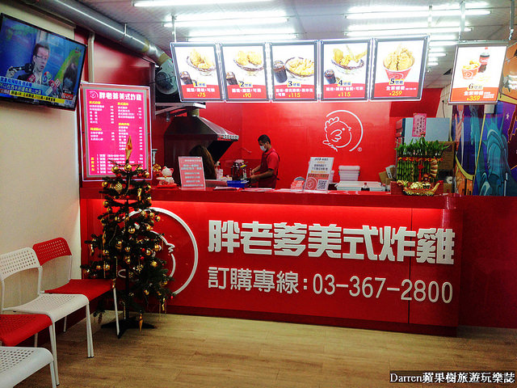

全台有幾家胖老爹
台灣創始店
台中市西屯區烈美街88號
楠梓區
楠梓店:楠梓區楠都東街182號
梓官店: 高雄市梓官區嘉展路507號之1
德賢店: 楠梓區德賢路261號
鼓山區
華榮店:高雄市鼓山區華榮路358號
西子灣店: 鼓山區濱海一路54號
前鎮區
三多店:前鎮區廣西路440號
瑞隆店: 前鎮區瑞隆路563號
三民區
建工店:三民區建工路642-1號
鼎中店: 三民區鼎中路758號
高醫店: 三民區熱河一街128號
彌陀區
彌陀店:彌陀區中正路324號
新興區
五福仁愛店: 新興區五福二路118號
鳳山區
五甲店:鳳山區五甲二路412號
中正店: 鳳山區中正路206號
青年店: 鳳山區青年路二段222號
左營區
左營自由店:左營區自由二路394號
左營店: 左營區左營大路114號
仁武區
仁武店:仁武區赤仁路198號
大社區
大社店:大社區中山路128號
苓雅區
武慶店:苓雅區三多一路185號
建國大順店: 苓雅區建國一路175之11號
小港區
康莊店:小港區康莊路167號
桂華店: 小港區桂華街20號
旗山區
旗山店:旗山區德昌路31號
燕巢區
燕巢店:燕巢區中西路57號
鹽埕區
愛河店:鹽埕區五福四路21號
岡山區
岡山店:岡山區大德3路113號
林園區
林園店:林園區林園北路294號
茄萣區
茄萣店:茄萣區茄萣路二段466之2號
美濃區
美濃店:美濃區成功路111號
橋頭區
橋頭店:橋頭區隆豐路154號

連到首頁
連到第二頁
連到第三頁
連到第五頁